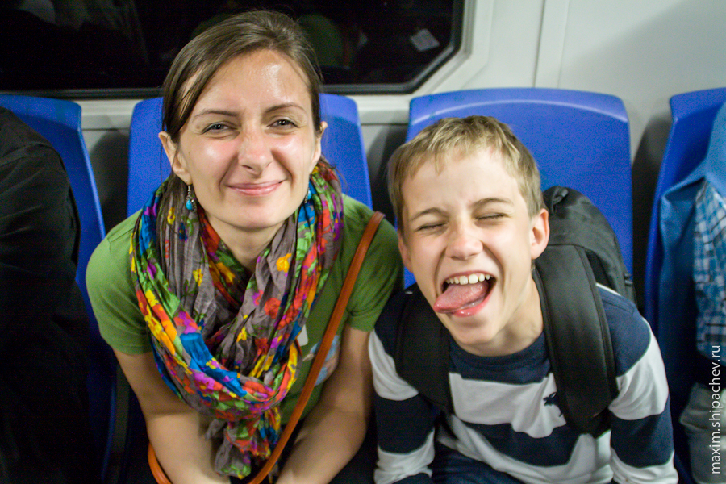

День восьмой путешествия по Стамбулу, 27 апреля знаменит тем, что никаких достопримечательностей мы так и не посетили. В планах, конечно, было сплавать на острова, но проснулись чуть позже, собирались чуть дольше, в конце концов решили отложить поездку на будущий день, а сегодня просто погулять по городу.
Небольшим дамокловым мечом висело, как всегда, отсутствие постоянного ночлега, но каких-то пару часов прогулки с заглядыванием во встречающиеся на пути гостиницы, чтобы услышать «Мест нет» или «Есть, 100 евро» и мы нашли, что искали. Решили, что на этот раз отелей с нас хватит и оплатили оставшиеся 4 ночи в отеле Sehir.
Со спокойной душой продолжили прогулку.


Решаем съездить в очередной раз на Истикляль с целью ненавязчивого, ограничиваемого объёмом половины рюкзака шоппинга (в итоге шоппинг ограничился джинсами, очками, и четырьмя парами носков).

Таксим и Истикляль в очередной раз полны людей. Спустя примерно месяц эти люди вовсе будут жечь костры и устраивать всякие мятежи. В один момент людей становится много, а детей с нами тоже, поэтому поднимаемся в кафе и пьём чай, наблюдая за причудами демократии.

Потом желание тратить деньги становится сильнее инстинкта самосохранения, идём в народ.

Оставив пару часов на Истикляле, возвращаемся в Султанахмет.


Находясь в Стамбуле, я не раз обращал внимание на большое количество людей в инвалидных колясках на улицах. Уверен, причина не в том, что в Стамбуле полно инвалидов. Это был бы неправильный вывод. Фишка в том, что много людей в инвалидных колясках именно на улице. В Кемерове, не говоря уж о таком недоразумении как Москва, инвалиды сидят по домам, потому что город, комфортный для здорового человека, становится настоящей полосой препятствия для человека в коляске.
Вряд ли человек в коляске может без помощи воспользоваться эскалатором. Ко всем станциям метро в Стамбуле (по крайней мере, какие встретились мне) можно спустится на лифте. Сам лифт сделан в стиле Стеклянного Куба Инноваций, что возили по городам России в прошлом году

Инвалиды-автомобилисты выделяются номерами и местом на стоянке. Причём места на стоянке отведены не со всей, что есть дури как в Кемерове. К примеру, рядом с парком Миниатюрк их всего три. Но свободных. Но три.

Пандусы для инвалидов — отдельная песня. В России, в лучшем случае, делают наклонную дорожку под тем же углом, что и лестница (а обычно ограничиваются )

Между остановками общественного транспорта и просто вдоль значимых маршрутов часто встречаются специальные, выложенные рифлёной плиткой дорожки для незрячих.
Вернёмся в мир здоровых людей. Вернёмся на 20 лет назад.
Характер дорожного движения в Стамбуле таков, что, возьми мы машину напрокат, я бы сошёл там с ума. Узкие дороги, отсутствие видимых правил дорожного движения. Мне было просто интересно развитие событий в случае ДТП. Ждут ли, парализуя милионный город, водители турецкую ГАИ, бегают ли с рулетками, сидят ли со стеклянными глазами закрыв стёкла? И такой шанс представился. Зазевавшийся водитель микроавтобуса на небольшой скорости снёс бампер такси, пока таксист разбирался со сдачей.
Они оба начали кричать друг на друга что-то неприлично турецкое, секунд через 300 крика водитель микроавтобуса поднял оторванный бампер (пробка сзади начала нервничать) поднёс его к месту, откуда он отвалился, ударил своим турецким кулаком, бампер встал на клипсы. Затем водитель микроавтобуса что-то прокричал таксисту. Подозреваю, что «Дорогой друг, я только что бесплатно починил твой автомобиль, будь здоров» и они разъехались по своим турецким делам. Пока осуществлялся разбор ДТП, я даже не успел включить видеокамеру.
А мы не спеша отправились в свой бюджетный неуютный номер в гостиницу Истикляль. Собираемся завтра на Острова. Моем ноги, ложимся спать.